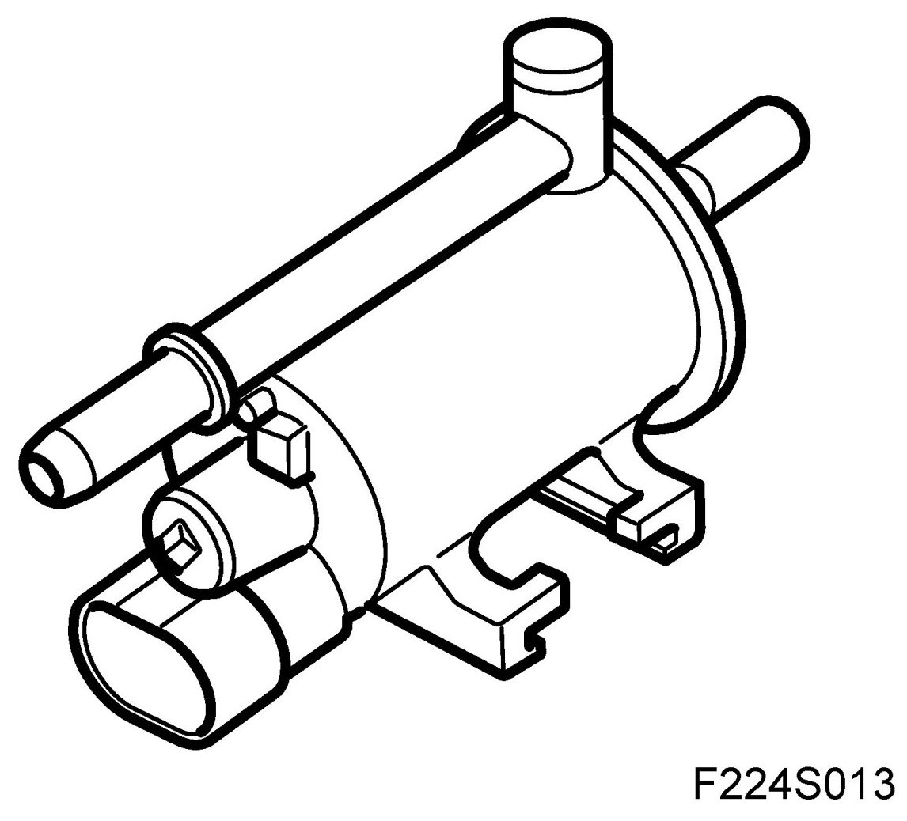
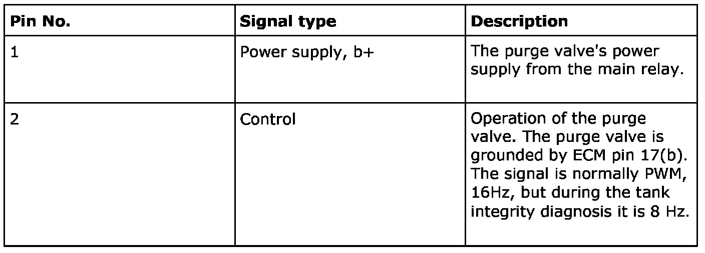
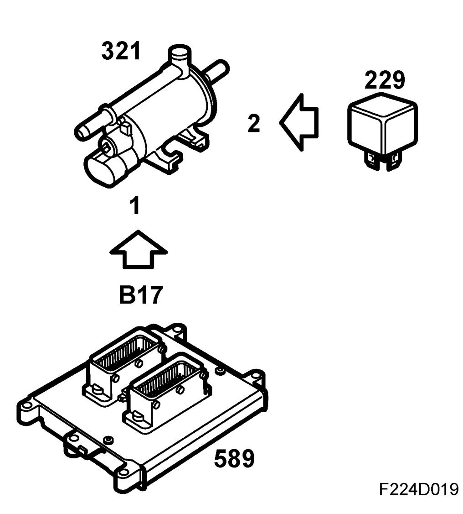
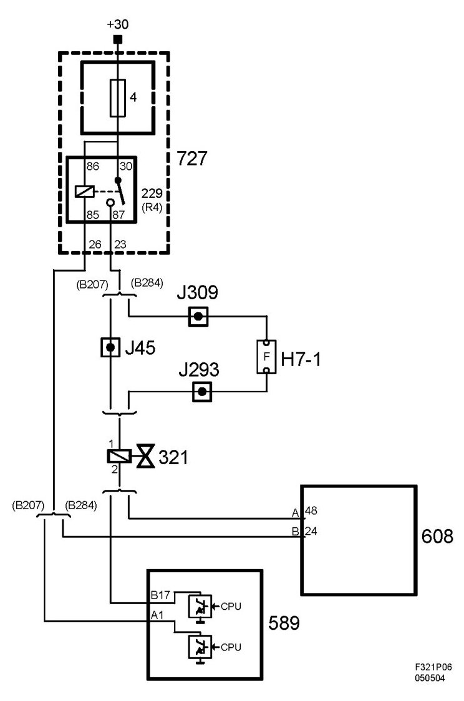

Canister Purge Control Valve: Description and Operation
EVAP Canister Purge Valve (321), T8
Location
EVAP canister purge valve (321)
Main task
The purge valve controls the amount of air/hydrocarbons which are to be drawn into the engine according to the current operating conditions.
Fuel which evaporates in the tank is led through a pipe to the evap. canister. The active carbon in the canister becomes saturated as it absorbs the hydrocarbon vapors. When the motor starts ambient air is sucked through the carbon filter via the purge valve and a non-return valve in the intake manifold. The petrol vapors follow with the air and are burnt in the engine.
Type

Connection



When not supplied with current the purge valve is closed.